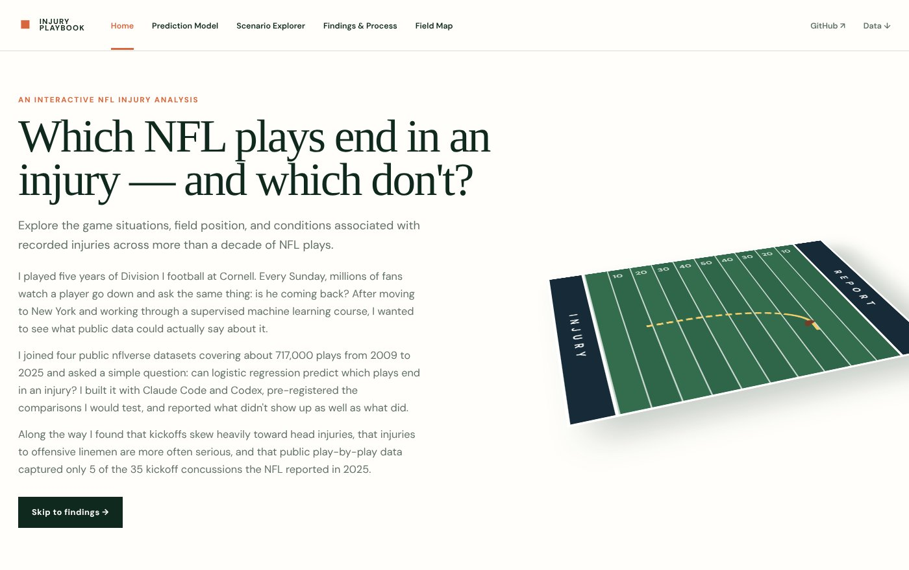

Live tool · Public data
KC Roll-Up Target Finder
Drop a platform company on a map of Kansas City and get every independent business nearby as an add-on target list. Refreshes monthly.
I'm from Kansas City, played five years of Division I football at Cornell, and graduated with an economics degree in December 2025. I live in New York now.
I got into AI during two internships at Epiq, where I met with each business unit to find work AI could take over and pitched what I found to the C-suite. Since then I've been building: a data platform for a PE-backed senior care company, tools for its chairman, and a few projects of my own. I build everything with AI coding tools, and lately I spend a lot of time teaching other people to use them too.
The question I keep coming back to: where does AI actually save a business time and money, and where doesn't it?
Projects
Drop a platform company on a map of Kansas City and get every independent business nearby as an add-on target list. Refreshes monthly.

A model trained on about 717,000 plays from 2009 to 2025. Build any play and see how risky it is, or read what held up and what didn't.
Pulled 15,000+ senior living operators and 7,000 hospices from public registries into one CRM, with a monthly feed of hospice openings, closures and ownership changes.
The chairman had built four tools on his own that only he could run. I combined them into one app his whole team uses.
Finds people, writes personal outreach and checks it never emails anyone twice. It booked 60 calls in its first month.
Scraped ten years of rosters from 24 programs (9,069 players) and found the 443 alumni working in New York finance, consulting and tech.